01. The Business KPI
Why This Page Mattered
Be's lending KPI needed to increase sixfold year over year, with Cash Loan serving as the primary revenue driver for GMV. Borrowing money through a super-app feels less like a banking choice and more like a quick lunch order. Users approach it with a mindset of "is this worth my time" rather than "careful financial planning." The issue with the landing page was not just a matter of aesthetics; it directly impacted the key metric that the entire team was evaluated against.
02. The real problem
People Don't Read, They Calculate
The old page explained the product like a bank would: a wall of text, a list of benefits, a terms checkbox, a button. New users clicked in but almost never submitted (4.69–7.02%) - the interest was there; something between "interested" and "applied" was quietly breaking.
Old Cashloan onboarding
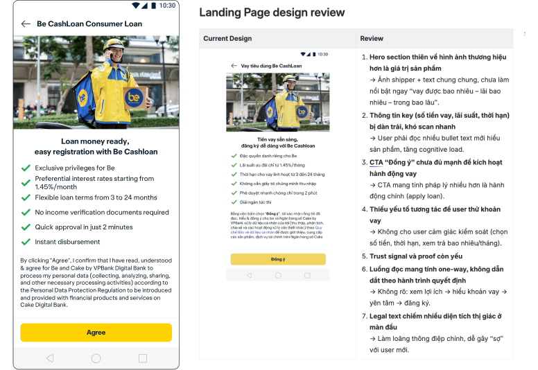
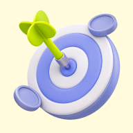
How might we help users understand and trust the quick loan service from the first view, to increase the conversion rate from onboarding view to loan registration?
03. Research
How I dug in
A competitor teardown (Momo, ZaloPay, ShopeePay) showed the same pattern everywhere: a loan calculator at the center, no theory upfront. The heatmap confirmed why — 20% of all clicks went straight to the calculator, while text-heavy sections pulled 6–7%. People weren't reading the explanation; they were hunting for one number: how much do I borrow, what do I pay each month.
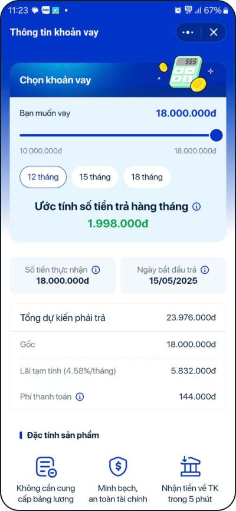
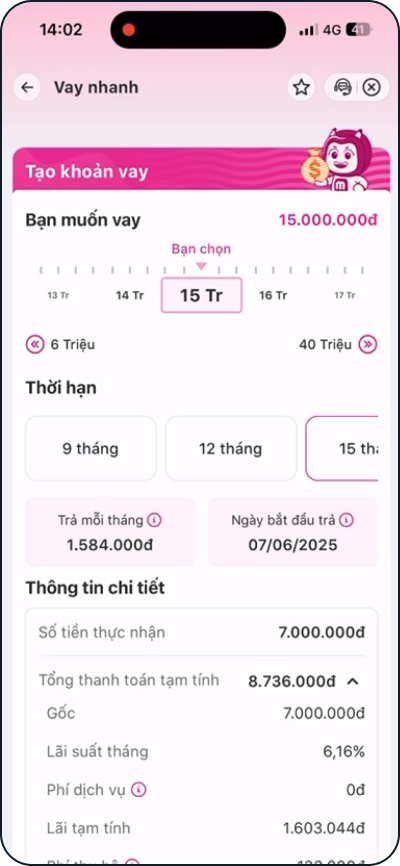
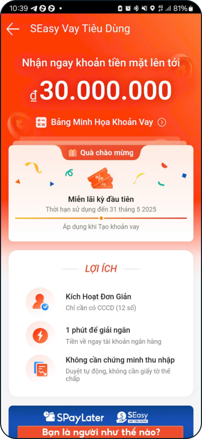
Common advantages of the market
- Low cognitive load, easy to access.
- Transparent loan model, no hidden fees.
- Testimonials/case studies increase credibility.
Common limitations of the market
- Still need to explain in detail for customers who have never borrowed to understand how it works.
- Need onboarding for users unfamiliar with the process.
Common points among all three competitors
All three competitors place interest rates/limits at the top of the page and have an early step for entering the loan amount in the flow. This is the basis for the decision to feature the interest rate prominently (instead of the limit) and integrate the loan amount selection step directly into the registration flow of the revamp, rather than separating the calculator into its own page.
The user demand behind these decisions
Confirmed by triangulating competitor benchmark, PO insight, and revamp data.
Where clicks actually went
People calculate based on their needs.
Text sections got skipped for the one number that mattered.
The actual cost felt scarier than it was.
1.45%/month reads fine — 17.4%/year feels expensive.
People committed before they understood.
A big limit up top pulled them in before the math landed.
04. Key objective
Three Things the Page Had to Do
Objective: Increase the conversion rate from the onboarding screen to loan registration.
01.
Calculator First, Not Last
Replace a page built for reading with a page built for answering the one question everyone actually has: how much, and what do I pay.
02.
Rate Before Limit
Help individuals grasp the true costs before they dive deeper into the process—fewer applications, but those that are more likely to convert and gain approval.
03.
Clear communication
Frame the true cost, and make it as clear as possible so it feels approachable without hiding any part of it because in lending, trust is the product.
05. Architecture Solution
New cashloan onboarding screen structure
Current Cashloan onboarding
- Hero image
- Heading
- Checklist (6 mục)
- Consent text
- CTA
New Cashloan onboarding
- Hero: interest rate, limit, term, CTA "View illustration"
- Promotion banner
- Benefits of using the product
- Testimonials — rating 4.8 + reviews from cashloan users
- 5-step activation flow - select loan amount in step 1
- FAQ - accordion format
- Footer - hotline + consent + loan application CTA
Why is the page structure designed this way?
| Goals | Details | Display section |
|---|---|---|
| Instantly convey costs | Display interest rate, limit, term at the top of the page for users to understand costs |
|
| Build trust | Prove through financial partners, clear benefits, and real user experience |
|
| Understand how to apply for a loan | Break down the loan process into short steps. |
|
| Q&A & support | Answer frequently asked questions and provide support channels before users commit |
|
06. Design solution
Three Design Decisions I Proposed for
Cashloan onboarding screen
Option A:
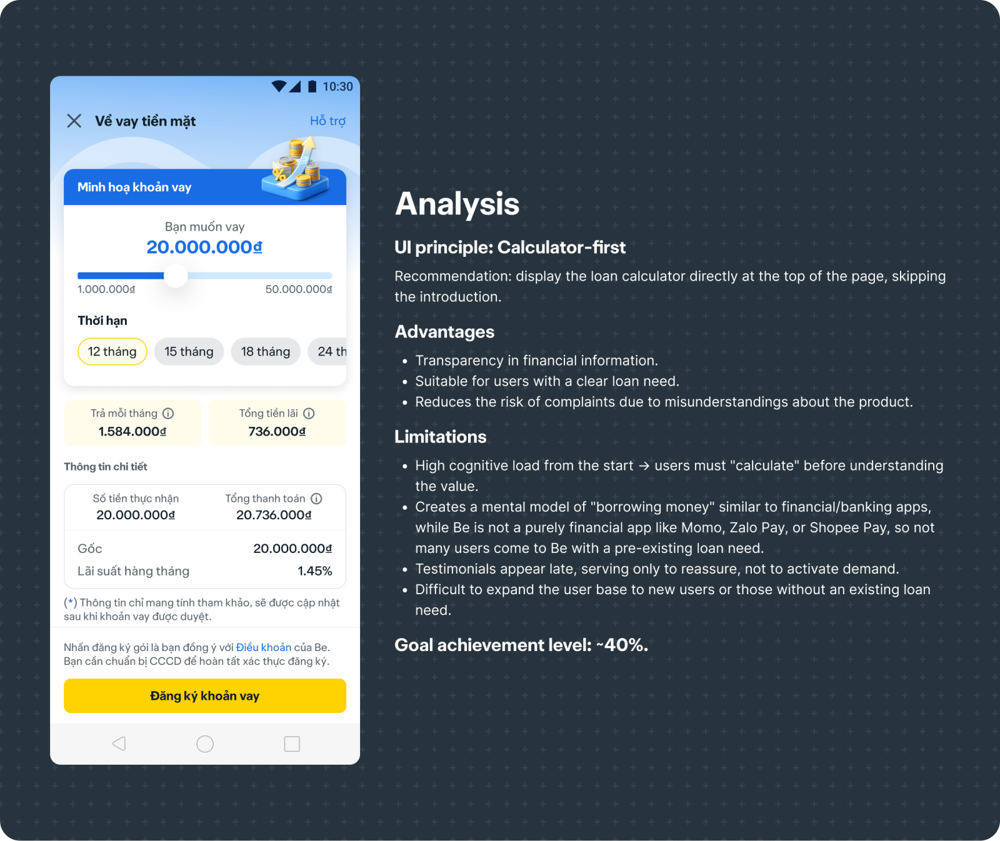
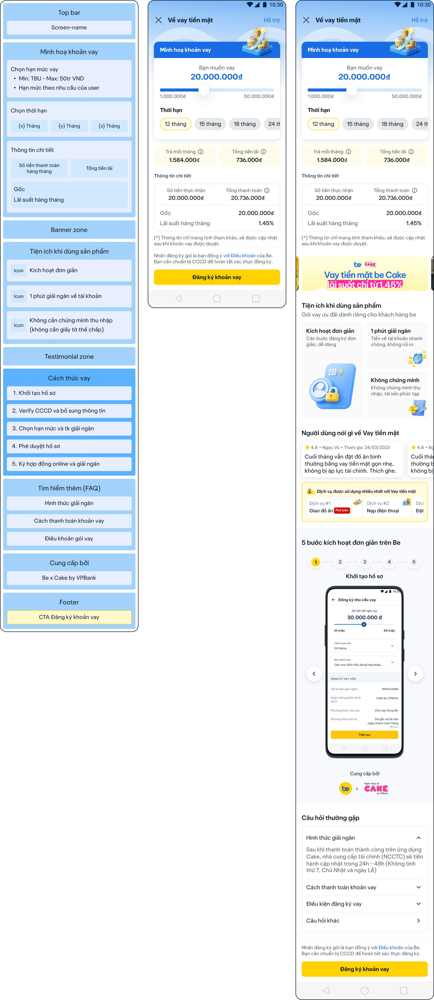
Option B:
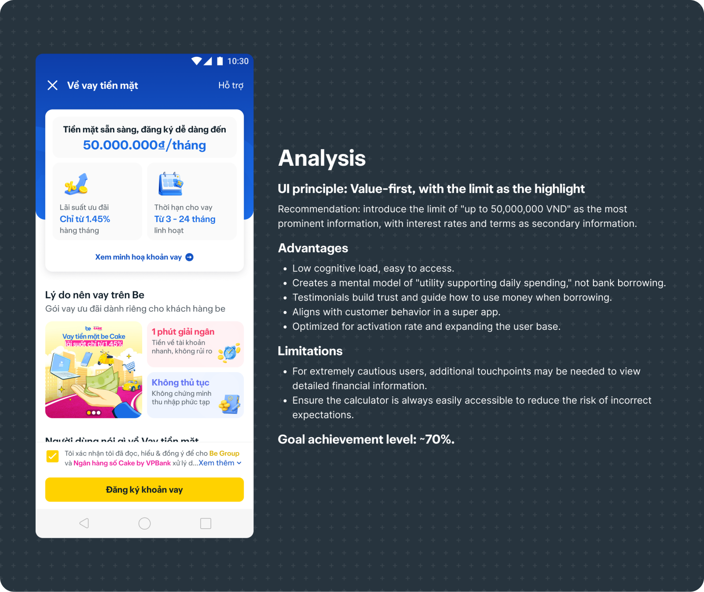
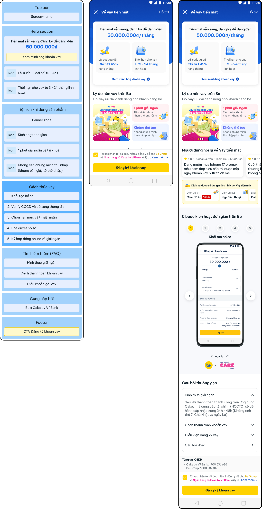
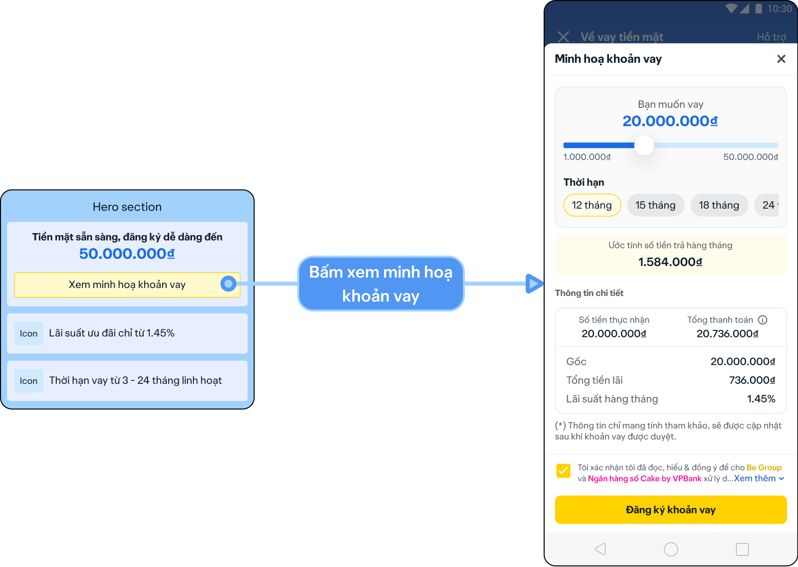
Option C:
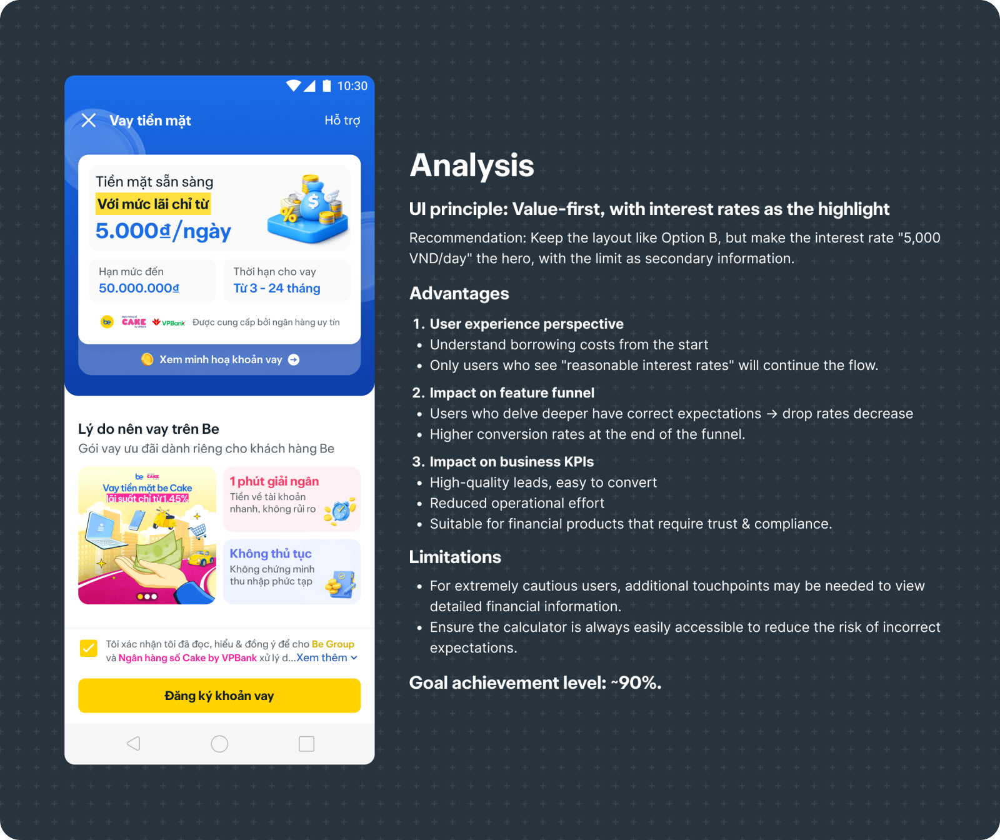
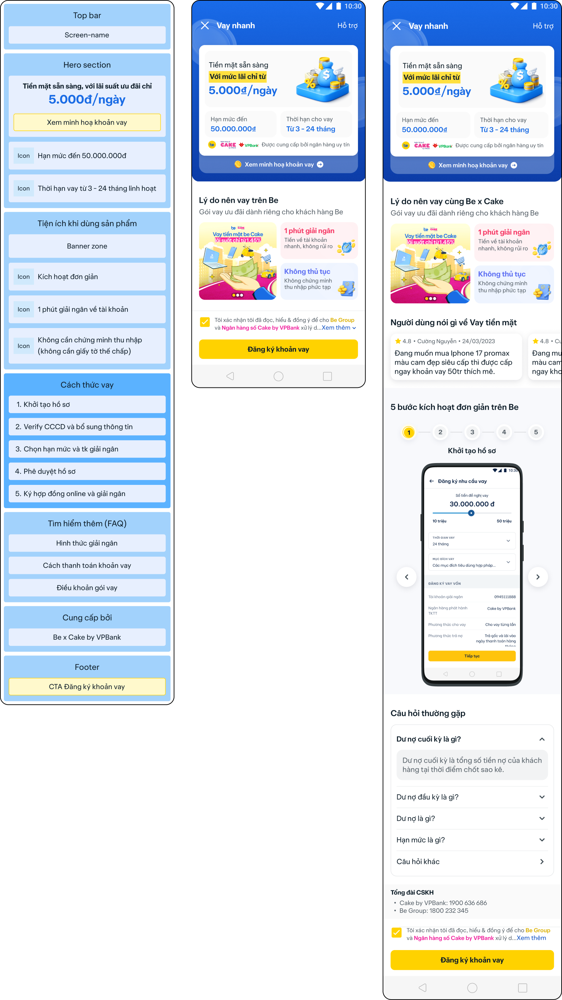
Internal review and A/B testing of the options
After presenting 3 options, the team decided to conduct internal A/B testing, comparing the current version (old) with all 3 newly proposed options.
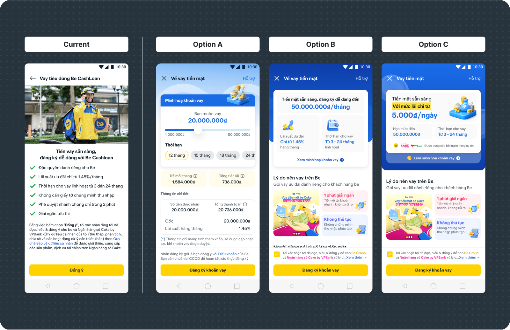
📉 final result
After 1 week of A/B testing with 20 – 30 users, the team decided to roll out Option C to 100% of users - because the interface of Option C informs users what the product is, why it is trustworthy first, and then presents the loan calculator as a "closing" step.
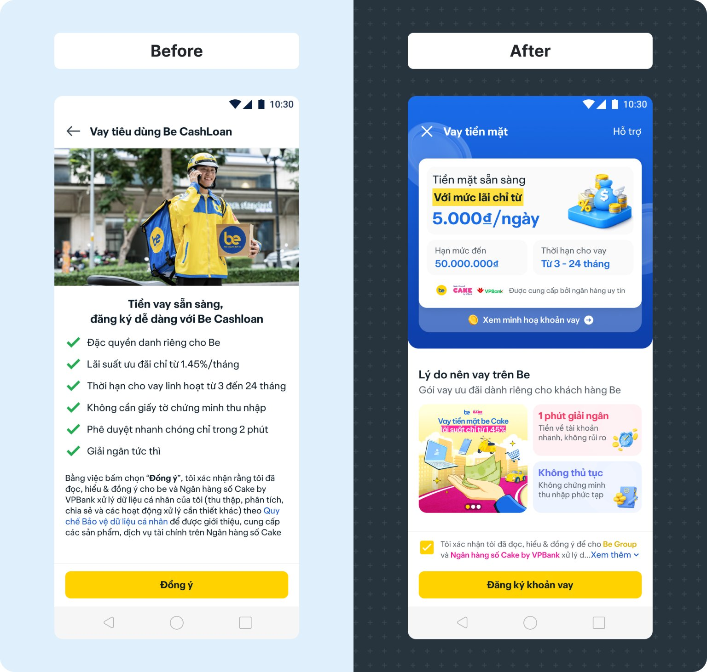
Results after going into production:
The loan registration click-through rate increased from 48% to 58%.
07. Other launching
What I Ship In Production
1. Cashloan onboarding fullflow
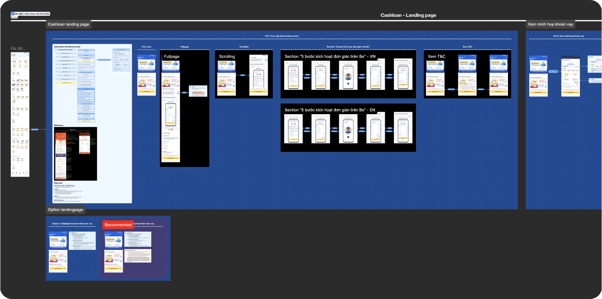
Link figma: https://www.figma.com/design/O0thJneOG1dXLNVrvn0rxE/Cashloan-2026--1-?node-id=263-15233&t=iN3MJ8rxOImEEKI0-1
2. Revamp Stepper screen
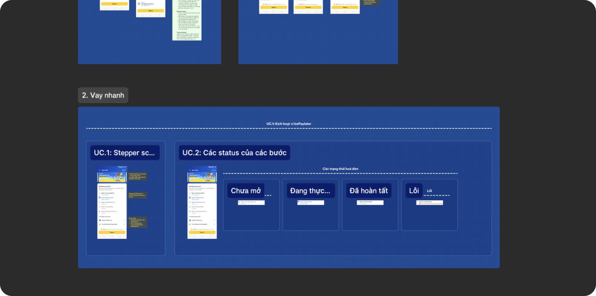
Link figma: https://www.figma.com/design/O0thJneOG1dXLNVrvn0rxE/Cashloan-2026--1-?node-id=768-13688&t=iN3MJ8rxOImEEKI0-1
3. Cashloan management
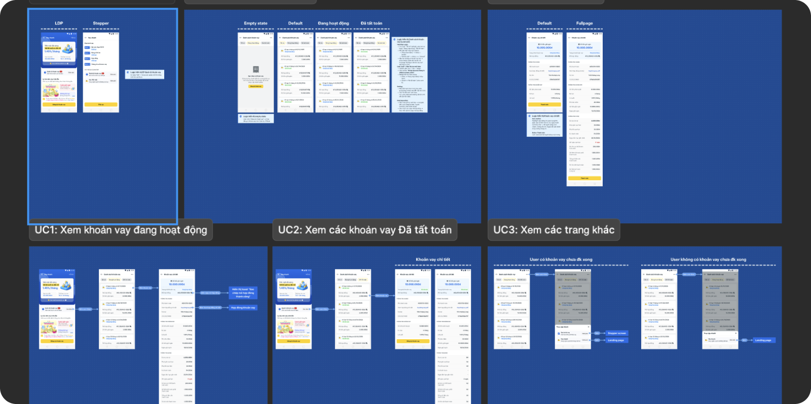
Link figma: https://www.figma.com/design/O0thJneOG1dXLNVrvn0rxE/Cashloan-2026--1-?node-id=832-16947&t=iN3MJ8rxOImEEKI0-1
4. Cashloan cross-sell entry point
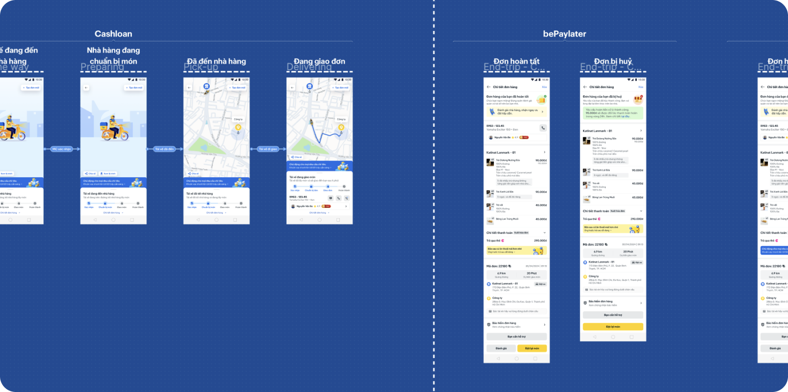
Link figma: https://www.figma.com/design/O0thJneOG1dXLNVrvn0rxE/Cashloan-2026--1-?node-id=832-16947&t=iN3MJ8rxOImEEKI0-1